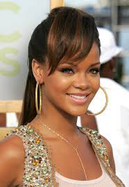

Favorite Artists At the Moment
Rihanna
Rihanna has recenlty dropped a new album, called "Anti" and has made record breaking achievements to date. I personally listen to this album everyday, and apprecaite the different kind of sounds and angles she took a chance featuring in her songs. Her lyrics are personal and truthful and really give a dose of the kind of person Rihanna is. She also used her Barbadian background to influence this album and it is shown throughout every song. She is currently on tour, and is gaining amazing reviews from the preformance she puts on.
About Rihanna
Rihanna is a singer/ songwriter born in the Caribbean island, of Barbados. At the age of 16, Rihanna moved to the United States to pursue her dream in the music industry. From that point forward, she made a name for herself and developed a fan base that has brought her to where she is now. In 2005, Rihanna auditioned for Def Jam Records, where Jay-Z signed her on the spot. Eight months later, she released her first single, "Pon De Replay", a funky quick jam that reached number 2 on the Billboard Charts that proved to everyone Rihanna is the next star of our generation. She proved that to be true when she continued releasing singles that reached number one on the Billboard Charts. From that point foward, Rihanna has evolved from a teenage star to a woman who is reffered to as "Queen" by her fans. She has won 13 Grammy Awards and has recieved positive reviews from everything she has released. She is also a fashion icon, with an individual style that has won her many awards, such as Style Icon Award in 2014.
